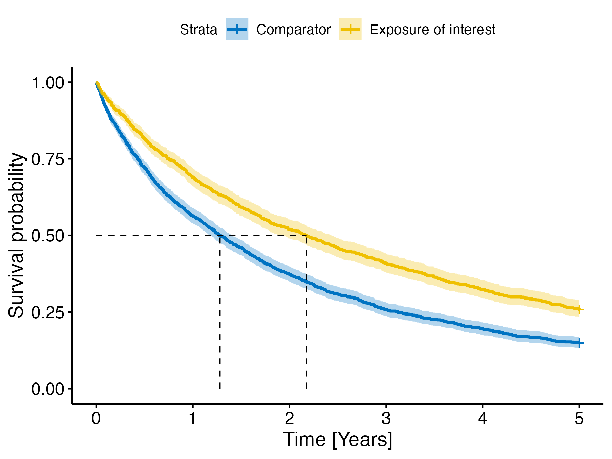

Data generation
A simulated dataset for package functionality demonstration
Janick Weberpals
Source:vignettes/a_data_generation.Rmd
a_data_generation.Rmd
library(smdi)
suppressPackageStartupMessages(library(dplyr))
# some global simulation parameters
seed_value <- 42
n <- 2500
smdi dataset background
To get acquainted with the functionality and usage of the
smdi package, the package includes a simulated example
dataset. The dataset is an exemplary low-dimensional electronic health
records (EHR) dataset depicting a cohort of 2,500 lung cancer patients.
The dataset follows the general one-row-per-patient structure,
in which one row stands for an individual patient and the columns
represent the variables.
Exposure and outcome
Let’s assume that we are interested in studying the comparative
effectiveness of two antineoplastic systemic drug treatment regimens
(exposure (0/1)) on the time to death due to any reason as
the outcome (overall survival). The anticipated time of
follow-up is truncated to 5 years.
The desired strength of effectiveness of the exposure of interest is defined with a hazard ratio of 1.0, i.e. there is no difference in overall survival among patients who are treated with the exposure of interest as compared to the comparator regimen. The proportional hazards assumption is fulfilled for this dataset.
Confounders
We further assume that there are a some confounders which we need to specify to estimate our outcome model. Most of the covariates are associated with both the probability of treatmente initation and the outcome but there are also some that are not predictive of the exposure and just the outcome or not associated with any of the exposure or outcome, whatsoever.
Despite the low dimensionality, the dataset is simulated as realistically as possible with varying strengths of associations between covariates and treatment initiation and the outcome.
Missingness
Most importantly for testing the functionality of this package, some of the above mentioned confounders are just partially observed according to the missingness mechanisms and proportions specified below in the table @ref(overview)) below.
Overview covariates/confounder structure
To get an overview of the dataset, this table provides a summary of the different covariate-exposure-outcome-missingness correlations.
| Variable | Description | Associated with exposure/outcome | Missingness [%] |
|---|---|---|---|
| age_num | Age at baseline (continuous) | Yes/Yes | |
| female_cat | Female gender (binary) | Yes/Yes | |
| ecog_cat | ECOG performance score 0/1 or >1 (binary) | Yes/Yes | MCAR [35%] |
| smoking_cat | Smoker vs. non-smoker at baseline (binary) | Yes/Yes | |
| physical_cat | Physically active vs not active (binary) | Yes/Yes | |
| egfr_cat | EGFR alteration (binary) | Yes/Yes | MAR [40%] |
| alk_cat | ALK translocation (binary) | No/Yes | |
| pdl1_num | PD-L1 expression in % (continuous) | Yes/Yes | MNAR(value) [20%] |
| histology_cat | Tumor histology squamous vs nonsquamous (binary) | No/Yes | |
| ses_cat | Socio-economic status (multi-categorical) | No/No | |
| copd_cat | History of COPD (binary) | No/No | Auxiliary to smoking |
Simulation of covariates and exposure
set.seed(seed_value)
# start with basic dataframe, covariates and their association with exposure
sim_covar <- tibble::tibble(
exposure = rbinom(n = n, size = 1, prob = 0.4),
age_num = rnorm(n, mean = 64 - 7.5*exposure, sd = 13.7),
female_cat = rbinom(n, size = 1, prob = 0.39 - 0.05*exposure),
ecog_cat = rbinom(n, size = 1, prob = 0.63 - 0.04*exposure),
smoking_cat = rbinom(n, size = 1, prob = 0.45 + 0.1*exposure),
physical_cat = rbinom(n, size = 1, prob = 0.35 + 0.02*exposure),
egfr_cat = rbinom(n, size = 1, prob = 0.20 + 0.07*exposure),
alk_cat = rbinom(n, size = 1, prob = 0.03),
pdl1_num = rnorm(n, mean = 40 + 10*exposure, sd = 10.5),
histology_cat = rbinom(n, size = 1, prob = 0.2),
ses_cat = sample(x = c("1_low", "2_middle", "3_high"), size = n, replace = TRUE, prob = c(0.2 , 0.4, 0.4)),
copd_cat = rbinom(n, size = 1, prob = 0.3 + 0.5*smoking_cat)
) %>%
# bring data in right format
dplyr::mutate(across(ends_with("num"), as.numeric)) %>%
dplyr::mutate(across(ends_with("num"), function(x) round(x, digits = 2)))In the first step, we create a dataset with 2,500 patients and 12 variables with the following distributions.
sim_covar %>%
gtsummary::tbl_summary(by = "exposure") %>%
gtsummary::add_difference()| Characteristic | 0, N = 1,5021 | 1, N = 9981 | Difference2 | 95% CI2,3 | p-value2 |
|---|---|---|---|---|---|
| age_num | 63 (54, 73) | 57 (48, 66) | 6.5 | 5.4, 7.6 | |
| female_cat | 588 (39%) | 334 (33%) | 5.7% | 1.8%, 9.6% | 0.004 |
| ecog_cat | 923 (61%) | 578 (58%) | 3.5% | -0.48%, 7.5% | 0.084 |
| smoking_cat | 686 (46%) | 567 (57%) | -11% | -15%, -7.1% | |
| physical_cat | 502 (33%) | 380 (38%) | -4.7% | -8.6%, -0.73% | 0.019 |
| egfr_cat | 286 (19%) | 255 (26%) | -6.5% | -10%, -3.1% | |
| alk_cat | 39 (2.6%) | 30 (3.0%) | -0.41% | -1.8%, 1.0% | 0.6 |
| pdl1_num | 40 (33, 47) | 50 (43, 57) | -10 | -11, -9.2 | |
| histology_cat | 288 (19%) | 220 (22%) | -2.9% | -6.2%, 0.47% | 0.090 |
| ses_cat | 0.05 | -0.03, 0.13 | |||
| 1_low | 302 (20%) | 222 (22%) | |||
| 2_middle | 592 (39%) | 377 (38%) | |||
| 3_high | 608 (40%) | 399 (40%) | |||
| copd_cat | 738 (49%) | 600 (60%) | -11% | -15%, -7.0% | |
| 1 Median (IQR); n (%) | |||||
| 2 Welch Two Sample t-test; Two sample test for equality of proportions; Standardized Mean Difference | |||||
| 3 CI = Confidence Interval | |||||
The following table illustrates the odds of exposure assignment.
exposure_form <- as.formula(paste("exposure ~ ", paste(colnames(sim_covar %>% dplyr::select(-exposure)), collapse = " + ")))
exposure_fit <- stats::glm(
exposure_form,
data = sim_covar,
family = "binomial"
)
exposure_fit %>%
gtsummary::tbl_regression(exponentiate = T)| Characteristic | OR1 | 95% CI1 | p-value |
|---|---|---|---|
| age_num | 0.97 | 0.96, 0.97 | |
| female_cat | 0.73 | 0.60, 0.88 | 0.001 |
| ecog_cat | 0.83 | 0.69, 1.00 | 0.054 |
| smoking_cat | 1.36 | 1.10, 1.69 | 0.005 |
| physical_cat | 1.27 | 1.05, 1.54 | 0.015 |
| egfr_cat | 1.47 | 1.18, 1.84 | |
| alk_cat | 1.36 | 0.77, 2.36 | 0.3 |
| pdl1_num | 1.10 | 1.08, 1.11 | |
| histology_cat | 1.15 | 0.91, 1.44 | 0.2 |
| ses_cat | |||
| 1_low | — | — | |
| 2_middle | 0.88 | 0.69, 1.13 | 0.3 |
| 3_high | 0.85 | 0.66, 1.09 | 0.2 |
| copd_cat | 1.39 | 1.12, 1.72 | 0.003 |
| 1 OR = Odds Ratio, CI = Confidence Interval | |||
Fitting a generalized linear model and assessing the probablity of treatment assignment, the above constellation of odds results in the following simulated distributions depicting propensities of treatment initiation (aka propensity scores).
# compute propensity score
exposure_plot <- sim_covar %>%
dplyr::mutate(ps = fitted(exposure_fit))
# plot density
exposure_plot %>%
ggplot2::ggplot(ggplot2::aes(x = ps, fill = factor(exposure))) +
ggplot2::geom_density(alpha = .5) +
ggplot2::theme_bw() +
ggplot2::labs(
x = "Pr(exposure)",
y = "Density",
fill = "Exposed"
)Treatment assignment probabilities.
Simulate time-to-event
Next, we simulate a time-to-event outcome for
overall survival. For this, the simsurv
package is used with the following assumptions:
- Parametric event times follow an exponential distribution
- Max event times: 5 years of follow-up
- Event times depend on some (time-fixed/baseline) covariate effects as listed in the table above
- beta coefficients for the outcome model as defined in the following
betas_os <- c(
exposure = log(1),
age_num = log(1.05),
female_cat = log(0.94),
ecog_cat = log(1.25),
smoking_cat = log(1.3),
physical_cat = log(0.79),
egfr_cat = log(0.5),
alk_cat = log(0.91),
pdl1_num = log(0.98),
histology_cat = log(1.15)
)
betas_os %>%
as.data.frame() %>%
dplyr::transmute(logHR = round(`.`, 2)) %>%
tibble::rownames_to_column(var = "Covariate") %>%
dplyr::mutate(HR = round(exp(logHR), 2)) %>%
gt::gt()| Covariate | logHR | HR |
|---|---|---|
| exposure | 0.00 | 1.00 |
| age_num | 0.05 | 1.05 |
| female_cat | -0.06 | 0.94 |
| ecog_cat | 0.22 | 1.25 |
| smoking_cat | 0.26 | 1.30 |
| physical_cat | -0.24 | 0.79 |
| egfr_cat | -0.69 | 0.50 |
| alk_cat | -0.09 | 0.91 |
| pdl1_num | -0.02 | 0.98 |
| histology_cat | 0.14 | 1.15 |
set.seed(seed_value)
sim_df <- sim_covar %>% dplyr::bind_cols(
simsurv::simsurv(
dist = "exponential",
lambdas = 0.05,
betas = betas_os,
x = sim_covar,
maxt = 5
)
) %>%
dplyr::select(-id)Kaplan-Meier estimates
The simulation resulted in the following crude Kaplan-Meier estimates for 1-yr and 5-yr survival. Unadjusted estimates belown are shown for overall and by exposure for overall survival.
km_overall <- survival::survfit(survival::Surv(eventtime, status) ~ 1, data = sim_df)
km_exposure <- survival::survfit(survival::Surv(eventtime, status) ~ exposure, data = sim_df)
gtsummary::tbl_survfit(
list(km_overall, km_exposure),
times = c(1, 5),
label_header = "**{time} Years**"
)| Characteristic | 1 Years | 5 Years |
|---|---|---|
| Overall | 61% (60%, 63%) | 19% (18%, 21%) |
| exposure | ||
| 0 | 56% (54%, 59%) | 15% (13%, 17%) |
| 1 | 69% (66%, 72%) | 26% (23%, 29%) |
Given, that the true exposure effect is null, the crude model is severely biased as we can see even more clearly in the crude Kaplan-Meier curve.
km_exposure <- survival::survfit(survival::Surv(eventtime, status) ~ exposure, data = sim_df)
survminer::ggsurvplot(
km_exposure,
data = sim_df,
conf.int = TRUE,
surv.median.line = "hv",
palette = "jco",
xlab = "Time [Years]",
legend.labs = c("Comparator", "Exposure of interest")
)
Cox proportional hazards
After adjusting, the simulated data results in the following hazard ratio (HR) estimates
cox_lhs <- "survival::Surv(eventtime, status)"
cox_rhs <- paste(colnames(sim_covar), collapse = " + ")
cox_form = as.formula(paste(cox_lhs, "~ exposure +", cox_rhs))
cox_fit <- survival::coxph(cox_form, data = sim_df)
cox_fit %>%
gtsummary::tbl_regression(exponentiate = T)| Characteristic | HR1 | 95% CI1 | p-value |
|---|---|---|---|
| exposure | 1.01 | 0.91, 1.12 | 0.8 |
| age_num | 1.05 | 1.04, 1.05 | |
| female_cat | 0.92 | 0.84, 1.01 | 0.087 |
| ecog_cat | 1.15 | 1.05, 1.26 | 0.002 |
| smoking_cat | 1.44 | 1.30, 1.60 | |
| physical_cat | 0.84 | 0.77, 0.92 | |
| egfr_cat | 0.52 | 0.46, 0.58 | |
| alk_cat | 0.88 | 0.66, 1.16 | 0.4 |
| pdl1_num | 0.98 | 0.98, 0.98 | |
| histology_cat | 1.17 | 1.05, 1.30 | 0.004 |
| ses_cat | |||
| 1_low | — | — | |
| 2_middle | 1.03 | 0.92, 1.16 | 0.6 |
| 3_high | 1.04 | 0.92, 1.17 | 0.5 |
| copd_cat | 0.90 | 0.81, 1.00 | 0.042 |
| 1 HR = Hazard Ratio, CI = Confidence Interval | |||
Export smdi_data_complete
To provide flexibility to play with the complete data before introducing missingness, we offer two datasets:
-
smdi_data_complete: complete data -
smdi_data: data with certain covariates missing (see next chapter)
smdi_data_complete <- sim_df
usethis::use_data(smdi_data_complete, overwrite = TRUE)Introduce missingness
In many different quantitative disciplines from classic epidemiology to machine and deep learning there is an increasing interest in utilizing electronic health records (EHR) to develop prognostic/predictive models or study the comparative effectiveness and safety of medical interventions. Especially information on variables which are not readily available in other datasets (e.g. administrative claims) are of high interest, including vital signs, biomarkers and lab data. However, these covariates are often just partially observed for various reasons:
- Physician did simply not perform/order a certain test
- Certain measurements are just collected for particularly sick patients
- Information is ‘hiding’ in unstructured records, e.g. clinical notes
To illustrate smdi's main functionalities using this
dataset, we introduce some missingness into relevant covariates (see
table in @ref(overview)) which are critical confounders of the causal
exposure-outcome relationship in the smdi_data dataset.
In order to introduce missingness following different missingness
mechanisms, we use the ampute function of the mice package. An excellent
tutorial on this very flexible and elegant function can be found here.
In brief, we introduce missingness by…
- Determining a missingess pattern
- Creating a weight vector, using fitted linear models for the probability of observations becoming missing
- Specifying a type of logistic probabillity distribution for the missingness weights
- Defining an overall missingness proportion
# prepare a placeholder df for missing simulation
# we do not consider ses_cat
tmp <- smdi_data_complete %>%
dplyr::select(-c(ses_cat))
# determine missingness pattern template
miss_pattern <- rep(1, ncol(tmp))Missing complete at random
ecog_cat1 will be set to missing according to the
following specification:
- Missingness pattern: Only
ecog_catwill be set to missing - Weight vector: There are no weights, since the missingness is not dependent on any other observed or unobserved covariates
- Type: Not applicable
TO DO: insert DAG for missingness-confounder relationship
# specify missingness pattern
# (0 = set to missing, 1 = remains complete)
mcar_col <- which(colnames(tmp)=="ecog_cat")
miss_pattern_mcar <- replace(miss_pattern, mcar_col, 0)
miss_prop_mcar <- .35
set.seed(42)
smdi_data_mcar <- mice::ampute(
data = tmp,
prop = miss_prop_mcar,
mech = "MCAR",
patterns = miss_pattern_mcar,
bycases = TRUE
)$amp %>%
dplyr::select(ecog_cat)
smdi_data_mcar %>%
dplyr::select(ecog_cat) %>%
dplyr::mutate(ecog_cat = forcats::fct_na_value_to_level(factor(ecog_cat), level = "missing")) %>%
gtsummary::tbl_summary()| Characteristic | N = 2,5001 |
|---|---|
| ecog_cat | |
| 0 | 629 (25%) |
| 1 | 972 (39%) |
| missing | 899 (36%) |
| 1 n (%) | |
Missing at random
egfr_cat will be set to missing according to the
following specification:
- Missingness pattern: Only
egfr_catwill be set to missing - Weight vector: all covariates (except
egfr_catitself andses_cat) contribute with equal weights as linear predictors for the probability of observations becoming missing - Type: higher weighted sum scores (i.e. higher odds of having an
egfr_catmutation) will have a larger probability of becoming incomplete - Define an overall missingness proportion of ~40%
# specify missingness pattern
# (0 = set to missing, 1 = remains complete)
mar_col <- which(colnames(tmp)=="egfr_cat")
miss_pattern_mar <- replace(miss_pattern, mar_col, 0)
# weights to compute missingness probability
# by assigning a non-zero value
miss_weights_mar <- rep(1, ncol(tmp))
miss_weights_mar <- replace(miss_weights_mar, mar_col, 0)
miss_prop_mar <- .4
set.seed(42)
smdi_data_mar <- mice::ampute(
data = tmp,
prop = miss_prop_mar,
mech = "MAR",
patterns = miss_pattern_mar,
weights = miss_weights_mar,
bycases = TRUE,
type = "RIGHT"
)$amp
smdi_data_mar %>%
dplyr::select(egfr_cat) %>%
dplyr::mutate(egfr_cat = forcats::fct_na_value_to_level(factor(egfr_cat), level = "missing")) %>%
gtsummary::tbl_summary()| Characteristic | N = 2,5001 |
|---|---|
| egfr_cat | |
| 0 | 1,175 (47%) |
| 1 | 310 (12%) |
| missing | 1,015 (41%) |
| 1 n (%) | |
Missing not at random - value
- Missingness pattern: Only
pdl1_numwill be set to missing - Weight vector: Only
pdl1_numitself (by a non-zero value) is the linear predictor for the probability of observations becoming missing - Type: Specify a type of logistic probabillity distribution for the
missingness weights, so that cases with low weighted sum scores
(i.e. lower
pdl1_numexpression) will have a larger probability of becoming incomplete - Define an overall missingness proportion of ~20%
# determine missingness pattern
mnar_v_col <- which(colnames(tmp)=="pdl1_num")
miss_pattern <- rep(1, ncol(tmp))
miss_pattern_mnar_v <- replace(miss_pattern, mnar_v_col, 0)
# weights to compute missingness probability
# by assigning a non-zero value
# MNAR_v: covariate itself is only predictor
miss_weights_mnar_v <- rep(0, ncol(tmp))
miss_weights_mnar_v <- replace(miss_weights_mnar_v, mnar_v_col, 1)
miss_prop_mnar_v <- .2
set.seed(42)
smdi_data_mnar_v <- mice::ampute(
data = tmp,
prop = miss_prop_mnar_v,
mech = "MNAR",
patterns = miss_pattern_mnar_v,
weights = miss_weights_mnar_v,
bycases = TRUE,
type = "LEFT"
)$amp
smdi_data_mnar_v %>%
dplyr::select(pdl1_num) %>%
gtsummary::tbl_summary()| Characteristic | N = 2,5001 |
|---|---|
| pdl1_num | 46 (39, 53) |
| Unknown | 517 |
| 1 Median (IQR) | |
Overview final simulated dataset
Let’s have a look at the final dataset.
smdi_data %>%
gtsummary::tbl_summary(by = "exposure") %>%
gtsummary::add_overall() %>%
gtsummary::add_difference()| Characteristic | Overall, N = 2,5001 | 0, N = 1,5021 | 1, N = 9981 | Difference2 | 95% CI2,3 | p-value2 |
|---|---|---|---|---|---|---|
| age_num | 61 (51, 70) | 63 (54, 73) | 57 (48, 66) | 6.5 | 5.4, 7.6 | |
| female_cat | 0.12 | 0.04, 0.20 | ||||
| 0 | 1,578 (63%) | 914 (61%) | 664 (67%) | |||
| 1 | 922 (37%) | 588 (39%) | 334 (33%) | |||
| smoking_cat | 0.22 | 0.14, 0.30 | ||||
| 0 | 1,247 (50%) | 816 (54%) | 431 (43%) | |||
| 1 | 1,253 (50%) | 686 (46%) | 567 (57%) | |||
| physical_cat | 0.10 | 0.02, 0.18 | ||||
| 0 | 1,618 (65%) | 1,000 (67%) | 618 (62%) | |||
| 1 | 882 (35%) | 502 (33%) | 380 (38%) | |||
| alk_cat | 0.02 | -0.06, 0.10 | ||||
| 0 | 2,431 (97%) | 1,463 (97%) | 968 (97%) | |||
| 1 | 69 (2.8%) | 39 (2.6%) | 30 (3.0%) | |||
| histology_cat | 0.07 | -0.01, 0.15 | ||||
| 0 | 1,992 (80%) | 1,214 (81%) | 778 (78%) | |||
| 1 | 508 (20%) | 288 (19%) | 220 (22%) | |||
| ses_cat | 0.05 | -0.03, 0.13 | ||||
| 1_low | 524 (21%) | 302 (20%) | 222 (22%) | |||
| 2_middle | 969 (39%) | 592 (39%) | 377 (38%) | |||
| 3_high | 1,007 (40%) | 608 (40%) | 399 (40%) | |||
| copd_cat | 0.22 | 0.14, 0.30 | ||||
| 0 | 1,162 (46%) | 764 (51%) | 398 (40%) | |||
| 1 | 1,338 (54%) | 738 (49%) | 600 (60%) | |||
| eventtime | 1.57 (0.52, 3.95) | 1.28 (0.43, 3.13) | 2.18 (0.75, 5.00) | -0.64 | -0.78, -0.49 | |
| status | 2,017 (81%) | 1,277 (85%) | 740 (74%) | 11% | ||
| ecog_cat | 0.04 | -0.06, 0.14 | ||||
| 0 | 629 (39%) | 368 (39%) | 261 (40%) | |||
| 1 | 972 (61%) | 586 (61%) | 386 (60%) | |||
| Unknown | 899 | 548 | 351 | |||
| egfr_cat | 0.20 | 0.09, 0.30 | ||||
| 0 | 1,175 (79%) | 823 (82%) | 352 (74%) | |||
| 1 | 310 (21%) | 184 (18%) | 126 (26%) | |||
| Unknown | 1,015 | 495 | 520 | |||
| pdl1_num | 46 (39, 53) | 42 (35, 49) | 51 (45, 58) | -9.1 | -10, -8.2 | |
| Unknown | 517 | 376 | 141 | |||
| 1 Median (IQR); n (%) | ||||||
| 2 Welch Two Sample t-test; Standardized Mean Difference; 3-sample test for equality of proportions without continuity correction | ||||||
| 3 CI = Confidence Interval | ||||||
Export smdi_data
Exporting the data to data/, so it can be used for
educative purposes and for playing around with the package.
usethis::use_data(smdi_data, overwrite = TRUE)